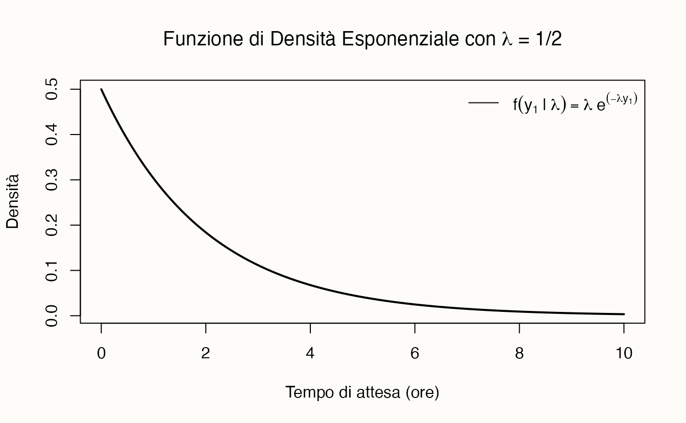
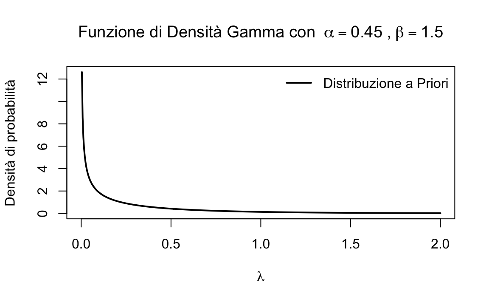
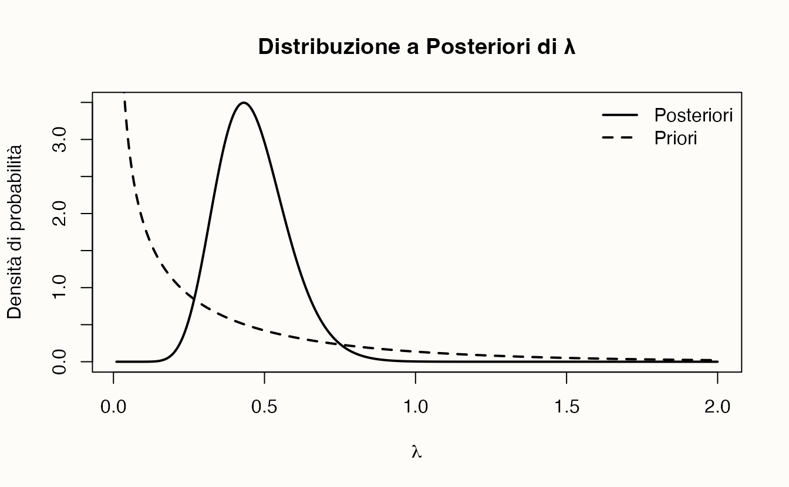
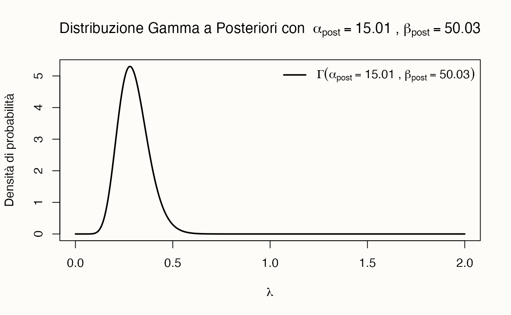

here::here("code", "_common.R") |>
source()
# Load packages
if (!requireNamespace("pacman")) install.packages("pacman")
pacman::p_load(tidyr)53 Modello gamma-esponenziale
Prerequisiti
- Leggere il Capitolo 37 e il Capitolo 38 della dispensa.
Concetti e competenze chiave
- Comprendere la distribuzione esponenziale come un modello probabilistico adatto per descrivere i tempi di attesa.
- Sapere applicare il metodo basato su griglia per derivare la distribuzione a posteriori del parametro λ del modello Gamma-Esponenziale.
- Conoscere il modello coniugato Gamma-Esponenziale, dimostrando come la distribuzione a priori Gamma si combini con la verosimiglianza esponenziale per produrre una distribuzione a posteriori Gamma.
- Sapere come calcolare e interpretare le probabilità utilizzando la distribuzione a posteriori.
Preparazione del Notebook
53.1 Introduzione
Nell’inferenza bayesiana, il modello coniugato Gamma-Esponenziale rappresenta un approccio analitico efficace per l’analisi di dati che seguono una distribuzione esponenziale. Questa distribuzione è comunemente utilizzata per modellare i tempi di attesa tra eventi in processi di Poisson, come ad esempio gli intervalli tra arrivi in un sistema a coda o la durata di eventi psicologici.
Consideriamo, ad esempio, un esperimento in psicologia in cui si misurano i tempi di insorgenza di episodi di ansia in seguito a un evento stressante. In questo caso, si può ipotizzare che i tempi di insorgenza siano distribuiti esponenzialmente. Il parametro \(\lambda\) della distribuzione esponenziale rappresenta il tasso medio con cui si verificano gli episodi di ansia.
Il modello coniugato Gamma-Esponenziale consente di stimare il parametro \(\lambda\) utilizzando i dati osservati. La distribuzione a priori Gamma viene utilizzata per rappresentare l’incertezza iniziale su \(\lambda\), mentre la distribuzione esponenziale modella i dati osservati. Grazie a questa coniugazione, l’aggiornamento delle credenze sul parametro \(\lambda\) avviene in modo semplice e analitico, permettendo di ottenere una stima bayesiana del tasso medio di occorrenza degli episodi di ansia, fornendo così una descrizione probabilistica accurata del fenomeno in esame.
53.1.1 Il Modello Matematico
Caso singolo. Supponiamo di osservare un singolo tempo di attesa \(y_1\) prima che si verifichi un evento, come un episodio di disagio psicologico. Assumiamo che questo tempo di attesa segua una distribuzione esponenziale con parametro \(\lambda\). La funzione di densità di probabilità (pdf) della distribuzione esponenziale è data da:
\[ f(y_1 \mid \lambda) = \lambda e^{-\lambda y_1}, \]
dove:
- \(y_1\) rappresenta il tempo di attesa,
- \(\lambda\) è il parametro della distribuzione, che rappresenta il tasso medio con cui gli eventi si verificano per unità di tempo.
In questa distribuzione, \(\lambda\) è il tasso di occorrenza o tasso di decadimento, ed è l’inverso del tempo medio di attesa. Più precisamente:
- Il tempo medio di attesa è il valore medio del tempo che trascorre prima che l’evento si verifichi (ad esempio, quanto tempo ci si aspetta in media prima che arrivi un autobus).
- Il parametro \(\lambda\) rappresenta la frequenza con cui l’evento si verifica per unità di tempo, e quindi \(\lambda = \frac{1}{\text{tempo medio}}\).
Pertanto, nella funzione esponenziale \(f(y_1 \mid \lambda) = \lambda e^{-\lambda y_1}\), il parametro \(\lambda\) è inversamente proporzionale al tempo medio di attesa: più grande è \(\lambda\), più breve è il tempo medio di attesa tra gli eventi.
Questa funzione descrive la probabilità di osservare un tempo di attesa esattamente uguale a \(y_1\), dato un valore specifico di \(\lambda\). Per la distribuzione esponenziale, la media è \(\frac{1}{\lambda}\) e la varianza è \(\frac{1}{\lambda^2}\), il che riflette l’influenza del tasso \(\lambda\) sulla dispersione dei tempi di attesa.
Per fare un esempio, supponiamo che il tempo medio di attesa sia 2 ore. In questo caso, il parametro \(\lambda\) (l’inverso del tempo medio di attesa) è \(\frac{1}{2}\).
# Parametro lambda (l'inverso del tempo medio di attesa)
lambda_value <- 1 / 2Disegniamo la funzione di densità esponenziale per tempi di attesa compresi tra 0 e 10 ore.
# Creazione dei valori di y1 su cui valutare la funzione
y1_values <- seq(0, 10, length.out = 500) # Intervallo da 0 a 10 ore
# Definizione della funzione di densità esponenziale
exponential_density <- function(y1, lambda_value) {
lambda_value * exp(-lambda_value * y1)
}
# Calcolo dei valori di f(y1 | lambda)
f_values <- exponential_density(y1_values, lambda_value)
# Creazione del grafico
plot(
y1_values, f_values,
type = "l", lwd = 2,
main = expression(paste(
"Funzione di Densità Esponenziale con ",
lambda, " = 1/2"
)),
xlab = "Tempo di attesa (ore)", ylab = "Densità"
)
legend("topright",
legend = expression(f(y[1] ~ "|" ~ lambda) == lambda ~ e^(-lambda * y[1])),
lty = 1, bty = "n"
)
Questo codice crea un grafico della funzione di densità esponenziale per \(\lambda = 1/2\) e tempi di attesa compresi tra 0 e 10 ore.
Il caso di \(n\) osservazioni indipendenti. Consideriamo ora un campione di \(n\) osservazioni indipendenti \(y_1, y_2, \dots, y_n\). L’indipendenza tra le osservazioni implica che il tempo di attesa osservato per un evento non influisce sulla probabilità di osservare altri tempi di attesa.
Poiché le osservazioni sono indipendenti, la probabilità congiunta di osservare tutti i tempi di attesa nel campione è il prodotto delle probabilità individuali. Di conseguenza, la funzione di verosimiglianza per l’intero campione è data da:
\[ f(y_1, y_2, \dots, y_n \mid \lambda) = f(y_1 \mid \lambda) \cdot f(y_2 \mid \lambda) \cdot \dots \cdot f(y_n \mid \lambda). \]
Sostituendo la funzione di densità della distribuzione esponenziale per ciascuna osservazione, otteniamo:
\[ f(y \mid \lambda) = \lambda e^{-\lambda y_1} \cdot \lambda e^{-\lambda y_2} \cdot \dots \cdot \lambda e^{-\lambda y_n}. \]
Raccogliendo i termini comuni, possiamo riscrivere la funzione di verosimiglianza come:
\[ f(y \mid \lambda) = \lambda^n e^{-\lambda (y_1 + y_2 + \dots + y_n)}. \]
Utilizzando la notazione di sommatoria, possiamo esprimere la funzione di verosimiglianza in modo compatto come:
\[ f(y \mid \lambda) = \lambda^n e^{-\lambda \sum_{i=1}^{n} y_i}. \]
La funzione di verosimiglianza \(f(y \mid \lambda)\) rappresenta la probabilità di osservare il campione \(y_1, y_2, \dots, y_n\) dato un particolare valore del parametro \(\lambda\). Un valore più alto della verosimiglianza indica una maggiore plausibilità del valore di \(\lambda\), dato il campione osservato.
Spesso è più conveniente lavorare con il logaritmo della funzione di verosimiglianza, poiché il logaritmo trasforma i prodotti in somme, semplificando i calcoli. Il logaritmo della funzione di verosimiglianza è:
\[ \log L(\lambda \mid y_1, y_2, \dots, y_n) = n \log \lambda - \lambda \sum_{i=1}^{n} y_i. \]
Questa forma semplificata della log-verosimiglianza è utile per stimare il parametro \(\lambda\) tramite tecniche come la massimizzazione della verosimiglianza.
53.2 Aggiornare le Nostre Credenze con l’Inferenza Bayesiana
Nell’approccio bayesiano, non consideriamo solo i dati, ma anche le nostre conoscenze a priori sul parametro \(\lambda\). Assegniamo a \(\lambda\) una distribuzione a priori, tipicamente una distribuzione Gamma. Combinando la verosimiglianza con la distribuzione a priori, otteniamo la distribuzione a posteriori di \(\lambda\), che rappresenta la nostra conoscenza aggiornata alla luce dei dati. La proprietà della coniugazione assicura che la distribuzione a posteriori sia anch’essa una Gamma, facilitando i calcoli.
Per fare un esempio concreto, simuleremo un campione di dati. Immaginiamo di raccogliere dati che rappresentano il tempo, misurato in ore, che intercorre tra episodi di ansia in individui con disturbi d’ansia. La distribuzione esponenziale può essere utilizzata per modellare questo tempo di attesa tra un episodio di ansia e il successivo. Ad esempio, possiamo ipotizzare che, una volta concluso un episodio, l’insorgenza del prossimo segua un processo stocastico con un tasso costante, indipendentemente dal tempo trascorso dall’episodio precedente. In questo contesto, il parametro \(\lambda\) della distribuzione esponenziale rappresenta il tasso medio di occorrenza degli episodi di ansia, ossia quanti episodi ci si aspetta in media in una certa unità di tempo (ad esempio, in un giorno).
Se \(\lambda\) è elevato, ciò indica che gli episodi di ansia sono più frequenti, con tempi di attesa più brevi tra un episodio e l’altro.
# Impostiamo il seed per rendere i risultati riproducibili
set.seed(42)
# Parametro medio (tempo medio di attesa in ore)
mean_time <- 3.0
lambda_param <- 1 / mean_time # Parametro lambda per la distribuzione esponenziale
# Numero di osservazioni nel campione
n <- 15
# Generazione del campione casuale
y <- round(rexp(n, rate = lambda_param))
y
#> [1] 1 2 1 0 1 4 1 1 4 2 4 7 0 0 4Immaginiamo che questi dati rappresentino il tempo di attesa in ore tra episodi di ansia in 15 individui con disturbi d’ansia. Il tempo di attesa medio è:
mean_time_observed <- mean(y)
mean_time_observed
#> [1] 2.133Il tasso di occorrenza, \(\lambda\), calcolato sulla base dei dati osservati è:
lambda_estimated <- 1 / mean_time_observed
lambda_estimated
#> [1] 0.4688Ora possiamo procedere a trovare la distribuzione a posteriori per il tasso di occorrenza \(\lambda\).
53.2.1 Passi per definire un prior debolmente informativo
Il primo passo consiste nel definire una distribuzione a priori per \(\lambda\), il tasso di occorrenza degli episodi di ansia in individui con disturbi d’ansia. Se disponiamo di poche informazioni a priori riguardo al valore di \(\lambda\), possiamo adottare una distribuzione a priori debolmente informativa. Un prior debolmente informativo ha lo scopo di esercitare una minima influenza sull’inferenza, consentendo ai dati osservati di guidare principalmente la stima del parametro.
La distribuzione a priori coniugata per la distribuzione esponenziale è la distribuzione Gamma. Un prior debolmente informativo per \(\lambda\) potrebbe essere impostato in modo tale da riflettere una conoscenza vaga, con una media che rappresenta un tempo di attesa ragionevole (basato su qualche informazione preliminare o ipotesi generale), ma con una varianza ampia, in modo da non vincolare eccessivamente l’inferenza.
Supponiamo di voler impostare una distribuzione a priori per il tasso di occorrenza \(\lambda\), in modo tale che il tempo medio di attesa sia 3.33 ore, con una deviazione standard ampia, ad esempio 5 ore. Poiché \(\lambda\) rappresenta il tasso di occorrenza (ovvero l’inverso del tempo medio di attesa), dobbiamo applicare la distribuzione Gamma ai valori di \(\lambda\), non direttamente ai tempi di attesa.
I parametri della distribuzione Gamma, \(\alpha\) (forma) e \(\beta\) (tasso), sono dati da:
- \(\alpha_{\text{prior}} = 0.45\)
- \(\beta_{\text{prior}} = 1.5\)
Verifichiamo che questi parametri corrispondano alla media e alla varianza desiderate.
# Parametri della distribuzione Gamma
alpha_prior <- 0.45 # Forma
beta_prior <- 1.5 # Tasso (inverso della scala)
# Calcolo della media e della varianza della distribuzione Gamma per λ
mean_lambda <- alpha_prior / beta_prior
variance_lambda <- alpha_prior / (beta_prior^2)
# Calcolo della media del tempo di attesa (E[Y] = 1 / E[λ])
mean_waiting_time <- 1 / mean_lambda
# Stampiamo la media e la varianza di λ e del tempo di attesa
cat("Media di λ:", mean_lambda, "\n")
#> Media di λ: 0.3
cat("Varianza di λ:", variance_lambda, "\n")
#> Varianza di λ: 0.2
cat("Media del tempo di attesa:", mean_waiting_time, "ore\n")
#> Media del tempo di attesa: 3.333 oreLa media del tempo di attesa è 3.33 ore, come desiderato. La varianza del tempo di attesa richiede un calcolo più complesso e non è semplicemente l’inverso della varianza di \(\lambda\).
53.2.2 Visualizzazione della Distribuzione a Priori
Disegniamo la funzione di densità della distribuzione Gamma per \(\lambda\), utilizzando i parametri specificati.
# Creazione dei valori x per il grafico
x <- seq(0, 2, length.out = 500)
# Funzione di densità della distribuzione Gamma con i parametri dati
gamma_pdf <- dgamma(x, shape = alpha_prior, rate = beta_prior)
# Creazione del grafico
plot(x, gamma_pdf,
type = "l", lwd = 2,
main = bquote("Funzione di Densità Gamma con " ~ alpha == .(alpha_prior) ~ "," ~ beta == .(beta_prior)),
xlab = expression(lambda),
ylab = "Densità di probabilità"
)
legend(
"topright",
legend = "Distribuzione a Priori",
lty = 1,
lwd = 2,
bty = "n"
)
53.3 Metodo Basato su Griglia
Poniamoci l’obiettivo di utilizzare il metodo basato su griglia per derivare la distribuzione a posteriori del parametro \(\lambda\) della distribuzione esponenziale. Iniziamo creando una griglia per \(\lambda\) nell’intervallo [0.01, 2].
# Evitiamo zero per evitare divisione per zero
lambda_grid <- seq(0.01, 2, length.out = 1000)53.3.1 Calcolo della Distribuzione a Priori
# Calcolo della distribuzione a priori
prior <- dgamma(lambda_grid, shape = alpha_prior, rate = beta_prior)53.3.2 Calcolo della Verosimiglianza
Immaginiamo di avere i seguenti dati, che rappresentano i tempi di attesa (in ore) tra episodi di ansia per 15 individui:
# Impostiamo il seed per rendere i risultati riproducibili
set.seed(42)
# Parametro medio (tempo medio di attesa in ore)
mean_time <- 3.0
lambda_param <- 1 / mean_time # Parametro λ per la distribuzione esponenziale
# Numero di osservazioni nel campione
n <- 15
# Generazione del campione casuale
y <- round(rexp(n, rate = lambda_param))
y
#> [1] 1 2 1 0 1 4 1 1 4 2 4 7 0 0 4Calcoliamo la log-verosimiglianza per ciascun valore di \(\lambda\) nella griglia:
53.3.3 Calcolo della Distribuzione a Posteriori
Calcoliamo la distribuzione a posteriori non normalizzata in logaritmo per evitare problemi di underflow numerico:
# Calcolo del log-posteriori non normalizzato
log_posterior_unnormalized <- log_likelihood + log(prior)
# Normalizzazione per stabilità numerica
log_posterior_unnormalized <- log_posterior_unnormalized - max(log_posterior_unnormalized)
# Convertiamo in scala normale
posterior_unnormalized <- exp(log_posterior_unnormalized)Normalizziamo la distribuzione a posteriori:
53.3.4 Visualizzazione dei Risultati
# Grafico della distribuzione a posteriori e a priori
plot(lambda_grid, posterior,
type = "l",
lwd = 2,
xlab = expression(lambda),
ylab = "Densità di probabilità",
main = "Distribuzione a Posteriori di λ"
)
lines(lambda_grid, prior, lwd = 2, lty = 2)
legend("topright",
legend = c("Posteriori", "Priori"),
lty = c(1, 2),
lwd = 2,
bty = "n"
)
Dal grafico, possiamo osservare come la distribuzione a posteriori di \(\lambda\) sia aggiornata rispetto alla distribuzione a priori in base ai dati osservati. La distribuzione a posteriori riflette sia le informazioni a priori sia l’evidenza fornita dai dati, fornendo una stima aggiornata del tasso di occorrenza degli episodi di ansia.
53.3.5 Calcolo della Media e Varianza Posteriori
Possiamo calcolare la media e la varianza a posteriori di \(\lambda\) utilizzando la distribuzione a posteriori calcolata sulla griglia.
# Calcolo della media a posteriori di λ
posterior_mean_lambda <- sum(lambda_grid * posterior * delta_lambda)
# Calcolo della varianza a posteriori di λ
posterior_variance_lambda <-
sum((lambda_grid - posterior_mean_lambda)^2 * posterior * delta_lambda)
# Stampiamo i risultati
cat("Media a posteriori di λ:", posterior_mean_lambda, "\n")
#> Media a posteriori di λ: 0.4612
cat("Varianza a posteriori di λ:", posterior_variance_lambda, "\n")
#> Varianza a posteriori di λ: 0.0137753.3.6 Stima del Tempo di Attesa Medio a Posteriori
Utilizzando la media a posteriori di \(\lambda\), possiamo stimare il tempo di attesa medio a posteriori:
# Stima del tempo di attesa medio a posteriori
posterior_mean_waiting_time <- 1 / posterior_mean_lambda
cat("Tempo di attesa medio a posteriori:", posterior_mean_waiting_time, "ore\n")
#> Tempo di attesa medio a posteriori: 2.168 oreIn conclusione, attraverso il metodo basato su griglia, abbiamo derivato la distribuzione a posteriori del tasso di occorrenza \(\lambda\), tenendo conto della nostra conoscenza a priori e dei dati osservati. Questo approccio ci permette di aggiornare le nostre credenze su \(\lambda\) in modo coerente con l’evidenza empirica, fornendo stime più accurate e affidabili.
53.4 Modello Coniugato Gamma-Esponenziale
Quando utilizziamo una distribuzione \(\text{Gamma}(\alpha, \beta)\) come distribuzione coniugata a priori, la distribuzione a posteriori risulta anch’essa essere una distribuzione Gamma, con parametri aggiornati \(\alpha + n\) e \(\beta + \sum_{i=1}^{n} x_{i}\).
In altre parole, se il parametro \(\lambda\) della distribuzione esponenziale segue una distribuzione a priori Gamma con parametri \(\alpha\) e \(\beta\), allora, dopo aver osservato un campione di \(n\) osservazioni \(x_1, x_2, \dots, x_n\), la distribuzione a posteriori di \(\lambda\) sarà ancora una distribuzione Gamma, ma con i parametri aggiornati:
\[ \lambda \mid x \sim \text{Gamma}(\alpha + n, \beta + \sum_{i=1}^{n} x_{i}). \]
Questo aggiornamento dei parametri è una conseguenza della proprietà coniugata della distribuzione Gamma rispetto alla distribuzione esponenziale.
53.4.1 Dimostrazione del Modello Coniugato Gamma-Esponenziale
Per dimostrare questo risultato, partiamo dal teorema di Bayes:
\[ f(\lambda \mid x) \propto f(x \mid \lambda) \cdot f(\lambda), \]
dove \(f(\lambda \mid x)\) è la distribuzione a posteriori di \(\lambda\) dato il campione \(x\), \(f(x \mid \lambda)\) è la verosimiglianza basata sul campione \(x\), e \(f(\lambda)\) è la distribuzione a priori di \(\lambda\).
La funzione di verosimiglianza per un campione di \(n\) osservazioni indipendenti \(x_1, x_2, \dots, x_n\), che seguono una distribuzione esponenziale con parametro \(\lambda\), è data da:
\[ f(x \mid \lambda) = \prod_{i=1}^{n} \lambda e^{-\lambda x_i} = \lambda^n e^{-\lambda \sum_{i=1}^{n} x_i}. \]
Supponiamo che il parametro \(\lambda\) segua una distribuzione a priori Gamma con parametri \(\alpha\) e \(\beta\):
\[ f(\lambda) = \frac{\beta^\alpha}{\Gamma(\alpha)} \lambda^{\alpha - 1} e^{-\beta \lambda}. \]
Moltiplicando la verosimiglianza per la distribuzione a priori, otteniamo la distribuzione a posteriori:
\[ f(\lambda \mid x) \propto \lambda^n e^{-\lambda \sum_{i=1}^{n} x_i} \cdot \lambda^{\alpha - 1} e^{-\beta \lambda}. \]
Semplificando, si ottiene:
\[ f(\lambda \mid x) \propto \lambda^{n + \alpha - 1} e^{-\lambda \left(\beta + \sum_{i=1}^{n} x_i\right)}. \]
Questa espressione corrisponde alla forma di una distribuzione Gamma con parametri aggiornati:
- parametro della forma (alpha): \(\alpha_{\text{post}} = \alpha + n\);
- parametro della scala (beta): \(\beta_{\text{post}} = \beta + \sum_{i=1}^{n} x_i\).
Quindi, la distribuzione a posteriori di \(\lambda\) dato il campione \(x\) segue una distribuzione Gamma con parametri aggiornati:
\[ \lambda \mid x \sim \text{Gamma}(\alpha + n, \beta + \sum_{i=1}^{n} x_i). \]
Questa derivazione mostra come l’informazione contenuta nei dati osservati venga incorporata nei parametri della distribuzione a posteriori, mantenendo la forma della distribuzione a priori grazie alla proprietà coniugata.
53.4.2 Calcolo dei Parametri Aggiornati
Per il caso dell’esempio in discussione:
- Il numero di osservazioni nel campione \(n\) è 15;
- La somma delle osservazioni nel campione è:
\[ \sum_{i=1}^{n} y_i = 1 + 9 + 4 + 3 + 1 + 1 + 0 + 6 + 3 + 4 + 0 + 11 + 5 + 1 + 1 = 50. \]
La distribuzione a posteriori per \(\lambda\) segue una distribuzione Gamma aggiornata con i seguenti parametri:
\[ \alpha_{\text{post}} = \alpha_{\text{prior}} + n, \]
\[ \beta_{\text{post}} = \beta_{\text{prior}} + \sum_{i=1}^{n} y_i. \]
Usando i valori \(\alpha_{\text{prior}} = 0.009\) e \(\beta_{\text{prior}} = 0.03\), otteniamo:
\[ \alpha_{\text{post}} = 0.009 + 15 = 15.009, \]
\[ \beta_{\text{post}} = 0.03 + 50 = 50.03. \]
# Dati iniziali
alpha_prior <- 0.009
beta_prior <- 0.03
n <- 15
y <- c(1, 9, 4, 3, 1, 1, 0, 6, 3, 4, 0, 11, 5, 1, 1)
sum_y <- sum(y)
# Parametri aggiornati
alpha_post <- alpha_prior + n
beta_post <- beta_prior + sum_y
# Stampa dei parametri aggiornati
cat(sprintf("alpha_post = %.3f; beta_post = %.3f\n", alpha_post, beta_post))
#> alpha_post = 15.009; beta_post = 50.030Generiamo il grafico della distribuzione a posteriori.
# Griglia di valori di lambda per il grafico
lambda_grid <- seq(0, 2, length.out = 1000)
# Calcolo della densità della distribuzione Gamma a posteriori
posterior_pdf <- dgamma(lambda_grid, shape = alpha_post, rate = beta_post)
# Creazione del grafico
plot(
lambda_grid, posterior_pdf,
type = "l", lwd = 2,
main = bquote(
"Distribuzione Gamma a Posteriori con " ~ alpha[post] ==
.(alpha_post) ~ "," ~ beta[post] == .(beta_post)
),
xlab = expression(lambda), ylab = "Densità di probabilità"
)
legend(
"topright",
legend = bquote(
Gamma(alpha[post] == .(alpha_post) ~ "," ~ beta[post] == .(beta_post))
),
lty = 1,
lwd = 2,
bty = "n"
)
53.4.3 Calcolo della Media e della Varianza a Posteriori
La media e la varianza della distribuzione a posteriori sono calcolate come:
\[ \text{E}[\lambda \mid y] = \frac{\alpha_{\text{post}}}{\beta_{\text{post}}}, \]
\[ \text{Var}[\lambda \mid y] = \frac{\alpha_{\text{post}}}{\beta_{\text{post}}^2}. \]
In R:
# Calcolo della media e della varianza a posteriori
posterior_mean <- alpha_post / beta_post
posterior_variance <- alpha_post / (beta_post^2)
# Stampa dei risultati
cat(sprintf("Media a posteriori di λ: %.3f\n", posterior_mean))
#> Media a posteriori di λ: 0.300
cat(sprintf("Varianza a posteriori di λ: %.6f\n", posterior_variance))
#> Varianza a posteriori di λ: 0.005996La distribuzione a posteriori di \(\lambda\) è aggiornata in base ai dati osservati e al prior. La media a posteriori rappresenta la stima del tasso di occorrenza degli episodi di ansia, mentre la varianza riflette l’incertezza nella stima.
- Media a Posteriori: La media a posteriori di \(\lambda\) è circa 0.3, indicando un tasso di occorrenza medio di 0.3 episodi per ora.
- Varianza a Posteriori: La varianza di 0.006 riflette una moderata incertezza nella stima di \(\lambda\).
Questi risultati evidenziano come la distribuzione Gamma aggiornata combini informazioni a priori e dati osservati per ottenere stime robuste del tasso di occorrenza \(\lambda\).
53.4.4 Trasformazione della media e della varianza
Per interpretare questi risultati in termini di tempi di attesa, dobbiamo trasformare i valori sulla scala inversa, cioè passare dal tasso \(\lambda\) ai tempi di attesa \(T = \frac{1}{\lambda}\).
La media del tempo di attesa \(T\) è l’inverso della media del tasso di occorrenza \(\lambda\). Pertanto, la media dei tempi di attesa sarà:
\[ \text{E}[T \mid y] = \frac{1}{\text{E}[\lambda \mid y]} = \frac{1}{0.3} \approx 3.33 \, \text{ore}. \]
Per la varianza del tempo di attesa, dobbiamo applicare una trasformazione più complessa. La varianza del tempo di attesa \(T\) è legata alla varianza di \(\lambda\) da:
\[ \text{Var}(T) = \frac{\text{Var}[\lambda \mid y]}{(\text{E}[\lambda \mid y])^4}. \]
Sostituendo i valori calcolati per la varianza e la media di \(\lambda\), otteniamo:
\[ \text{Var}(T) \approx \frac{0.006}{(0.3)^4} \approx 24.59 \, \text{ore}. \]
In conclusione,
- la media del tempo di attesa a posteriori è di circa 3.33 ore;
- la varianza del tempo di attesa a posteriori è di circa 24.59 ore, che indica una certa dispersione dei tempi di attesa, con alcuni episodi che possono verificarsi molto più rapidamente o più lentamente rispetto alla media. Si noti che la distribuzione a posteriori è più concentrata rispetto al prior, poiché incorpora l’informazione aggiuntiva proveniente dai dati osservati.
Questa trasformazione ci permette di interpretare i risultati sulla scala dei tempi di attesa, che è più intuitiva per descrivere fenomeni psicologici come l’insorgenza di episodi di ansia.
53.5 Applicazioni
Una volta ottenuta la distribuzione a posteriori per λ, possiamo utilizzarla per rispondere a domande probabilistiche relative ai tempi di attesa tra episodi di ansia. Questo approccio ci consente di calcolare probabilità aggiornate alla luce dei dati osservati, rispecchiando meglio l’incertezza e le informazioni disponibili. Ad esempio, possiamo stimare la probabilità di osservare tempi di attesa compresi tra 2 e 5 ore.
Per risolvere questo problema possiamo usare il metodo Monte Carlo:
- Generiamo un gran numero di campioni dalla distribuzione Gamma a posteriori di \(\lambda\), usando i parametri \(\alpha_{\text{posteriori}}\) e \(\beta_{\text{posteriori}}\).
- Convertiamo ciascun \(\lambda\) campionato in un tempo di attesa \(T = \frac{1}{\lambda}\).
- Calcoliamo le probabilità richieste (ad esempio, \(P(T > 2)\) e \(P(T < 5)\)) semplicemente contando le proporzioni di campioni che soddisfano tali condizioni.
53.5.1 Simulazione con Monte Carlo
Utilizziamo i parametri posteriori della distribuzione Gamma per simulare campioni di \(\lambda\) e calcolare la probabilità che il tempo di attesa tra due episodi di ansia sia compreso tra 2 e 5 ore.
# Parametri posteriori per la distribuzione Gamma
alpha_post <- 15.009
beta_post <- 50.03
# Numero di campioni da generare
n_samples <- 100000
# Simulazione di campioni dalla distribuzione Gamma per λ
lambda_samples <- rgamma(n_samples, shape = alpha_post, rate = beta_post)
# Conversione dei campioni di λ in tempi di attesa T = 1/λ
waiting_time_samples <- 1 / lambda_samples
# Calcolo della probabilità che il tempo di attesa sia compreso tra 2 e 5 ore
prob_between_2_and_5_mc <-
mean(waiting_time_samples >= 2 & waiting_time_samples <= 5)
# Stampa del risultato
cat(sprintf("Probabilità che il tempo di attesa sia tra 2 e 5 ore: %.4f\n", prob_between_2_and_5_mc))
#> Probabilità che il tempo di attesa sia tra 2 e 5 ore: 0.9027La probabilità che il tempo di attesa tra due episodi di ansia sia compreso tra 2 e 5 ore è di circa 0.9029, ovvero il 90.3%. Questa stima si basa su campioni simulati dalla distribuzione a posteriori di \(\lambda\), trasformati nei corrispondenti tempi di attesa. L’approccio Monte Carlo è utile per calcolare probabilità che coinvolgono trasformazioni non lineari, come nel caso del tempo di attesa.
53.6 Riflessioni Conclusive
Il modello esponenziale si rivela uno strumento utile e versatile nella ricerca psicologica, in particolare per la modellazione di fenomeni caratterizzati da tempi di attesa o durate di eventi. È applicabile in vari contesti, tra cui l’analisi dei tempi di reazione, lo studio degli intervalli tra episodi di ansia o depressione e, più in generale, in tutti quei processi psicologici che possono essere descritti come il tempo trascorso fino al verificarsi di un evento.
Un aspetto particolarmente vantaggioso dell’uso di modelli basati sulla distribuzione esponenziale nell’inferenza bayesiana è la possibilità di utilizzare le famiglie coniugate. Nella famiglia coniugata Gamma-Esponenziale, la distribuzione a priori Gamma per il tasso \(\lambda\) si aggiorna in modo analitico quando si osservano nuovi dati esponenziali. Questo rende i calcoli bayesiani particolarmente efficienti e semplici da implementare, poiché la distribuzione a posteriori rimane della stessa forma della distribuzione a priori (ossia, una Gamma). Tale proprietà coniugata consente di ottenere una stima aggiornata del tasso \(\lambda\) e di fare inferenze accurate sui tempi di attesa futuri.
La combinazione tra la distribuzione esponenziale e il prior Gamma non solo semplifica l’inferenza, ma fornisce anche una struttura interpretativa chiara. Ad esempio, il parametro \(\lambda\), che rappresenta il tasso di occorrenza di un fenomeno, viene aggiornato sulla base dell’evidenza osservata, consentendo una stima dinamica della frequenza con cui gli episodi si verificano. Questo approccio bayesiano offre un’interpretazione probabilistica naturale dei tempi di attesa futuri, rispecchiando l’incertezza presente nei dati.
Inoltre, grazie alla flessibilità del metodo Monte Carlo, è possibile simulare campioni dalla distribuzione a posteriori di \(\lambda\) e ottenere stime precise per una vasta gamma di probabilità, come la probabilità che il tempo di attesa sia compreso tra intervalli specifici. Questo approccio simulativo permette di rispondere a domande specifiche relative ai processi psicologici, ad esempio la probabilità che un episodio di ansia duri più di un certo numero di ore.
In conclusione, il modello esponenziale, integrato in un framework bayesiano con famiglie coniugate, rappresenta un utile strumento per la ricerca psicologica. Offre un modo rigoroso per modellare e analizzare dati su tempi di attesa e durate, fornendo al contempo una base solida per l’inferenza e la previsione dei processi psicologici.
Informazioni sull’Ambiente di Sviluppo
sessionInfo()
#> R version 4.4.2 (2024-10-31)
#> Platform: aarch64-apple-darwin20
#> Running under: macOS Sequoia 15.3.1
#>
#> Matrix products: default
#> BLAS: /Library/Frameworks/R.framework/Versions/4.4-arm64/Resources/lib/libRblas.0.dylib
#> LAPACK: /Library/Frameworks/R.framework/Versions/4.4-arm64/Resources/lib/libRlapack.dylib; LAPACK version 3.12.0
#>
#> locale:
#> [1] C/UTF-8/C/C/C/C
#>
#> time zone: Europe/Rome
#> tzcode source: internal
#>
#> attached base packages:
#> [1] stats graphics grDevices utils datasets methods base
#>
#> other attached packages:
#> [1] thematic_0.1.6 MetBrewer_0.2.0 ggokabeito_0.1.0 see_0.10.0
#> [5] gridExtra_2.3 patchwork_1.3.0 bayesplot_1.11.1 psych_2.4.12
#> [9] scales_1.3.0 markdown_1.13 knitr_1.49 lubridate_1.9.4
#> [13] forcats_1.0.0 stringr_1.5.1 dplyr_1.1.4 purrr_1.0.4
#> [17] readr_2.1.5 tidyr_1.3.1 tibble_3.2.1 ggplot2_3.5.1
#> [21] tidyverse_2.0.0 rio_1.2.3 here_1.0.1
#>
#> loaded via a namespace (and not attached):
#> [1] generics_0.1.3 stringi_1.8.4 lattice_0.22-6 hms_1.1.3
#> [5] digest_0.6.37 magrittr_2.0.3 evaluate_1.0.3 grid_4.4.2
#> [9] timechange_0.3.0 fastmap_1.2.0 rprojroot_2.0.4 jsonlite_1.9.1
#> [13] mnormt_2.1.1 cli_3.6.4 rlang_1.1.5 munsell_0.5.1
#> [17] withr_3.0.2 tools_4.4.2 parallel_4.4.2 tzdb_0.4.0
#> [21] colorspace_2.1-1 pacman_0.5.1 vctrs_0.6.5 R6_2.6.1
#> [25] lifecycle_1.0.4 htmlwidgets_1.6.4 pkgconfig_2.0.3 pillar_1.10.1
#> [29] gtable_0.3.6 glue_1.8.0 xfun_0.51 tidyselect_1.2.1
#> [33] rstudioapi_0.17.1 farver_2.1.2 htmltools_0.5.8.1 nlme_3.1-167
#> [37] rmarkdown_2.29 compiler_4.4.2